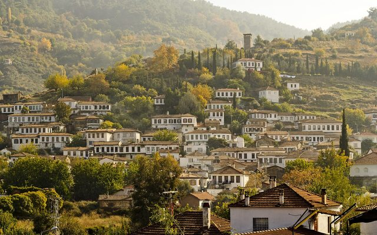

İzmir'de Kültür Varlıkları rehberinde 43 yer var: 20 ören yeri, 18 müze, 4 kale & tarihi yapı, 1 dini yapı. Aşağıda öne çıkanları, haritayı ve tüm yerlerin listesini bulabilirsiniz.
⭐ Öne çıkanlar

Bergama Akropolü, Helenistik dönemde Bergama Krallığı'nın başkenti olan Pergamon'un, ovadan yüzlerce metre yükselen sarp bir tepenin üzerine kurulmuş yönetim ve kültür…

Efes, antik çağın en büyük liman kentlerinden biri ve Roma döneminde Asya eyaletinin en parlak merkezlerinden biriydi.

Bergama Asklepionu, sağlık tanrısı Asklepios'a adanmış ve antik dünyanın en ünlü tedavi merkezlerinden biri olan kutsal bir alandır.
🗺 Haritada
📍 Tüm yerler (43)
Ören Yeri (20)
Bergama AkropolüÖren Yeri · UNESCOEfesÖren Yeri · UNESCOBergama Asklepion ÖrenyeriÖren Yeri · UNESCO Bergama KızılavluÖren Yeri · UNESCO
Bergama KızılavluÖren Yeri · UNESCO Agora ÖrenyeriÖren Yeri
Agora ÖrenyeriÖren Yeri Ayasuluk - St.Jean ÖrenyeriÖren Yeri
Ayasuluk - St.Jean ÖrenyeriÖren Yeri Efes Örenyeri-YamaçevlerÖren Yeri
Efes Örenyeri-YamaçevlerÖren Yeri Erythrai Antik KentiÖren Yeri
Erythrai Antik KentiÖren Yeri Eski Smyrna (Bayraklı Höyüğü)Ören Yeri
Eski Smyrna (Bayraklı Höyüğü)Ören Yeri Karabel Kaya KabartmasıÖren Yeri
Karabel Kaya KabartmasıÖren Yeri Klaros ÖrenyeriÖren Yeri
Klaros ÖrenyeriÖren Yeri Kolophon Antik KentiÖren Yeri
Kolophon Antik KentiÖren Yeri Kyme Antik KentiÖren Yeri
Kyme Antik KentiÖren Yeri Lebedos Antik KentiÖren Yeri
Lebedos Antik KentiÖren Yeri Metropolis ÖrenyeriÖren Yeri
Metropolis ÖrenyeriÖren Yeri Notion Antik KentiÖren Yeri
Notion Antik KentiÖren Yeri Phokaia (Foça) Antik KentiÖren Yeri
Phokaia (Foça) Antik KentiÖren Yeri Teos ÖrenyeriÖren Yeri
Teos ÖrenyeriÖren Yeri Yeşilova HöyüğüÖren YeriKlazomenai ÖrenyeriÖren Yeri
Yeşilova HöyüğüÖren YeriKlazomenai ÖrenyeriÖren YeriMüze (18)
 Efes MüzesiMüze
Efes MüzesiMüze Ahmet Piriştina Kent Arşivi ve MüzesiMüze
Ahmet Piriştina Kent Arşivi ve MüzesiMüze Arkas Sanat MerkeziMüze
Arkas Sanat MerkeziMüze Bergama MüzesiMüze
Bergama MüzesiMüze Birgi Çakırağa KonağıMüze
Birgi Çakırağa KonağıMüze Bostanlı Açık Hava Arkeoloji MüzesiMüze
Bostanlı Açık Hava Arkeoloji MüzesiMüze Key Museum (Klasik Otomobil Müzesi)Müze
Key Museum (Klasik Otomobil Müzesi)Müze Latife Hanım Köşkü Anı EviMüze
Latife Hanım Köşkü Anı EviMüze Çamlık Buharlı Lokomotif MüzesiMüze
Çamlık Buharlı Lokomotif MüzesiMüze Çeşme MüzesiMüze
Çeşme MüzesiMüze İzmir Arkeoloji MüzesiMüze
İzmir Arkeoloji MüzesiMüze İzmir Kültür Sanat FabrikasıMüzeEfes Deneyim MüzesiMüzeEge Üniversitesi Tabiat Tarihi MüzesiMüzeTire MüzesiMüzeÖdemiş MüzesiMüzeİzmir Atatürk MüzesiMüzeİzmir Resim Heykel MüzesiMüze
İzmir Kültür Sanat FabrikasıMüzeEfes Deneyim MüzesiMüzeEge Üniversitesi Tabiat Tarihi MüzesiMüzeTire MüzesiMüzeÖdemiş MüzesiMüzeİzmir Atatürk MüzesiMüzeİzmir Resim Heykel MüzesiMüzeKale & Tarihi Yapı (4)
 Ayasuluk KalesiKale & Tarihi Yapı
Ayasuluk KalesiKale & Tarihi Yapı Nymphaion (Nif) Laskaris SarayıKale & Tarihi Yapı
Nymphaion (Nif) Laskaris SarayıKale & Tarihi Yapı
Şirince KöyüKale & Tarihi YapıKadifekaleKale & Tarihi YapıDini Yapı (1)

⏳ Zamanda yolculuk
🧭 Bu ili içeren rotalar
🏺 İlgili uygarlık rehberleri
👩🏫 Öğretmenler için
📄 Bergama Akropolü – Okul gezisi kâğıdı📄 Bergama – Zamanda yolculuk📄 Efes Ören Yeri – Okul gezisi kâğıdı📄 Efes – Zamanda yolculuk📄 Benim ilim: İzmir🚌 Bu ile okul gezisi planlaEtkinlik kâğıtları ▸